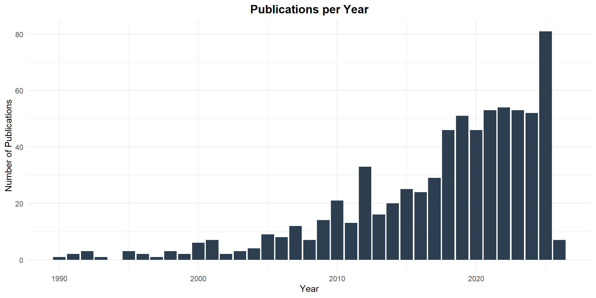

Outputs
Browse and search all 728 outputs from network members. Use the dropdown filters and search box below each column header to filter by type, year, or other criteria.
TipOutput Types in This Collection
- Journal Article: 531
- Preprint: 50
- Conference Paper: 30
- Book Chapter: 21
- Other: 21
- Conference Abstract: 20
- Report: 18
- Conference Poster: 11
- Blog Post: 5
- Conference Presentation: 5
- Online Resource: 3
- Book Review: 2
- Data Set: 2
- Dissertation Thesis: 2
- Magazine Article: 2
- Newsletter Article: 2
- Conference Output: 1
- Moving Image: 1
- Website: 1
Publications by Year
Warning: package 'ggplot2' was built under R version 4.5.2
Data sourced from ORCID. Last updated: 2026-02-02 08:56:31 GMT